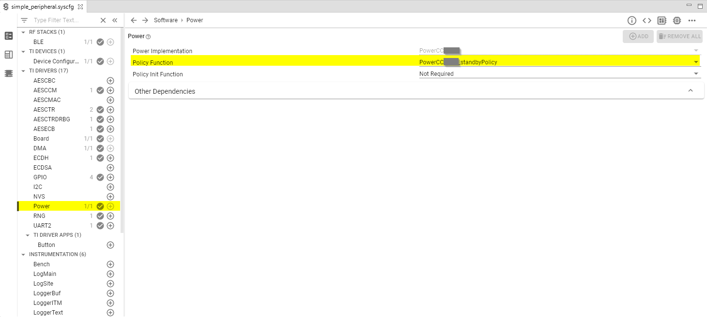

Power Management¶
All power-management functionality is handled by the TI power driver and are used by the peripheral drivers (e.g. UART, SPI, I2C, etc..). Applications can prevent, if they choose, the CC13xx or CC26xx from entering low power modes by setting a power constraint.
By default, all the examples in SimpleLink CC13xx/CC26xx SDK will put the CC13xx or CC26xx in standby mode if there is no task running. This is achieved by configuring the TI power driver and the kernel to do so, as shown in the following step.
In the
FreeRTOSConfig.h, set following define:#define configUSE_TICKLESS_IDLE 1This means we use a built-in FreeRTOS functionality to get the number of ticks until the next tasks need to be executed. Please refer to FreeRTOS Low Power Support. for more information.
When there is no task running within 2 ticks from the future, then the
vPortSuppressTicksAndSleep(TickType_t xExpectedIdleTime)will be called, which returns the number of ticks until next task occurs. The function can be found in{SDK_INSTALL_DIR}\kernel\freertos\dpl\PowerCCxxxx_freertos.cIn
vPortSuppressTicksAndSleep, we can see the tick is saved to a global variable and Power_idleFunc() gets called.1void vPortSuppressTicksAndSleep(TickType_t xExpectedIdleTime) 2{ 3 /* Stash FreeRTOS' expected idle time */ 4 PowerCCxxxx_idleTimeOS = xExpectedIdleTime; 5 6 /* 7 * call Power-driver-specified idle function, to conditionally invoke the 8 * Power policy 9 */ 10 Power_idleFunc(); 11}
Power_idleFunctakes in policyFxn and policyFxn is defined using SysConfig tool Figure 64.. By default, TI sets thePowerCCxxxx_standbyPolicyas policyFxn.Power_idleFuncis defined in{SDK_INSTALL_DIR}\source\ti\drivers\power\PowerCCxxxx.candPowerCCxxxx_standbyPolicycan be found in{SDK_INSTALL_DIR}\kernel\freertos\dpl\PowerCCxxxx_freetos.cFigure 64. Configure Power Policy for Idle Function.¶
In the Sysconfig generated files, you will find the following example in ti_drivers_config.c.
1const PowerCCXXXX_Config PowerCCxxxx_config = { 2 .policyInitFxn = NULL, 3 .policyFxn = PowerCCxxxx_standbyPolicy, 4};
With BLE5-Stack applications, the power constraint is set in main() by
defining the POWER_SAVING preprocessor symbol. When defined,
enabled, the device enters and exits sleep as required for BLE5-Stack events,
peripheral events, application timers, and so forth. When undefined, the
device stays in active mode.
Also see Measuring Bluetooth Smart Power Consumption for steps to analyze the system power consumption and battery life.